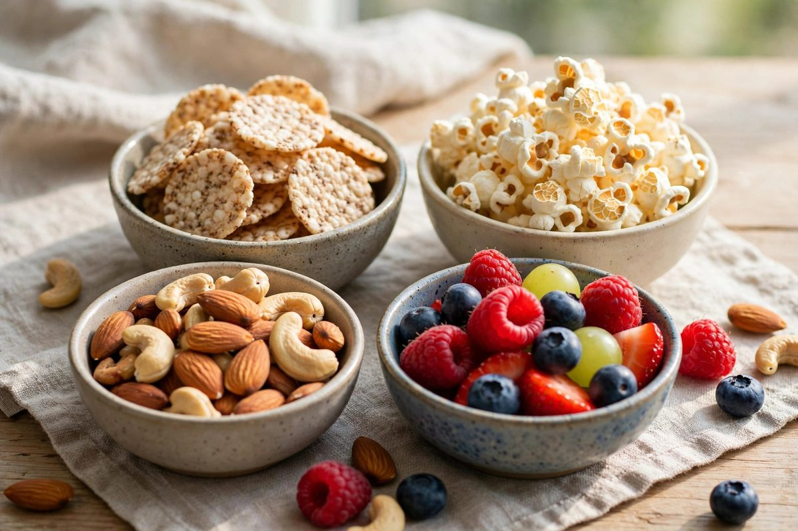

Home » Guides
Gluten-Free Snacks

Snacks are where a gluten-free diet can go wrong, because so many convenient snacks are based on wheat: biscuits, crackers, pretzels, and cereal bars. But there are plenty of naturally gluten-free snacks, and many of them are healthier and cheaper than the packaged alternatives. This guide covers snacks for home, work, school, and travel, how to read snack labels, and which packaged snacks are worth buying.
Naturally gluten-free snacks
The best gluten-free snacks need no special products. Fresh fruit, such as a banana, an apple, or a handful of berries, is quick and healthy. Nuts and seeds are filling and portable, although they are high in calories, so a small handful is enough. Yoghurt, cheese, and hard-boiled eggs add protein. Vegetable sticks with hummus are a good crunchy snack. Rice cakes with nut butter or cream cheese are light and easy. Popcorn, made at home from corn kernels, is naturally gluten-free and high in fibre, as long as you check the flavouring.
Snacks for work and school
For work or school, pack snacks that travel well and do not need a fridge. A small bag of nuts, a piece of fruit, a rice cake, or a gluten-free cereal bar all work. Make your own snack boxes with cheese, fruit, and gluten-free crackers, which are cheaper and healthier than buying them ready-made. Keep a stash of snacks in your desk or bag so you are never caught hungry with only a biscuit tin nearby. If you buy snacks, check the label every time, because recipes change and a snack that was gluten-free last month may not be this month.
Snacks to check carefully
Many snacks that look gluten-free are not. Flavoured crisps may contain wheat-based flavourings, and some tortilla chips are made in factories that handle wheat. Cereal bars often contain barley malt syrup or oats that are not certified gluten-free. Liquorice, some sweets, and many sauces contain wheat. Soy sauce contains wheat, so check for tamari instead. Always read the label and look for a certified gluten-free claim if you have celiac disease. When in doubt, choose a plain, unflavoured snack, which is less likely to contain hidden gluten.
Making your own snacks
Home-made snacks are cheaper, healthier, and safer than packaged ones. Make a batch of gluten-free muffins or cookies and freeze them in portions. Roast chickpeas with olive oil and spices for a crunchy snack. Make energy balls from dates, oats, and nut butter. Cut vegetables and fruit into sticks and keep them in the fridge in water so they stay crisp. Bake your own crackers from gluten-free flour, seeds, and olive oil. A little preparation on Sunday gives you snacks for the whole week.
Snacks for the week
A weekly snack plan stops the afternoon biscuit habit. On Sunday, prepare a few snacks for the week: roast a batch of chickpeas, cut vegetables into sticks, and bake a tray of gluten-free muffins. Portion the snacks into small boxes or bags, so you can grab one when you need it. Keep a box at work or in your bag, so you are never caught hungry with only a vending machine nearby. A little preparation on Sunday makes healthy snacking easy all week, and it saves money compared with buying snacks every day.
Frequently Asked Questions
Is popcorn gluten-free?
Plain popcorn made from corn kernels is naturally gluten-free. Check the flavouring on ready-made popcorn, as some contain wheat.
Are rice cakes gluten-free?
Most plain rice cakes are gluten-free, but check the label for a certified claim, especially for flavoured varieties.
Can I eat cereal bars if I am gluten-free?
Only if they are labelled gluten-free. Many cereal bars contain wheat, barley malt, or uncertified oats.
Important: if you have celiac disease or a wheat allergy, always check labels and look for certified gluten-free products. This site is general information only — talk to your doctor or a registered dietitian before changing your diet.